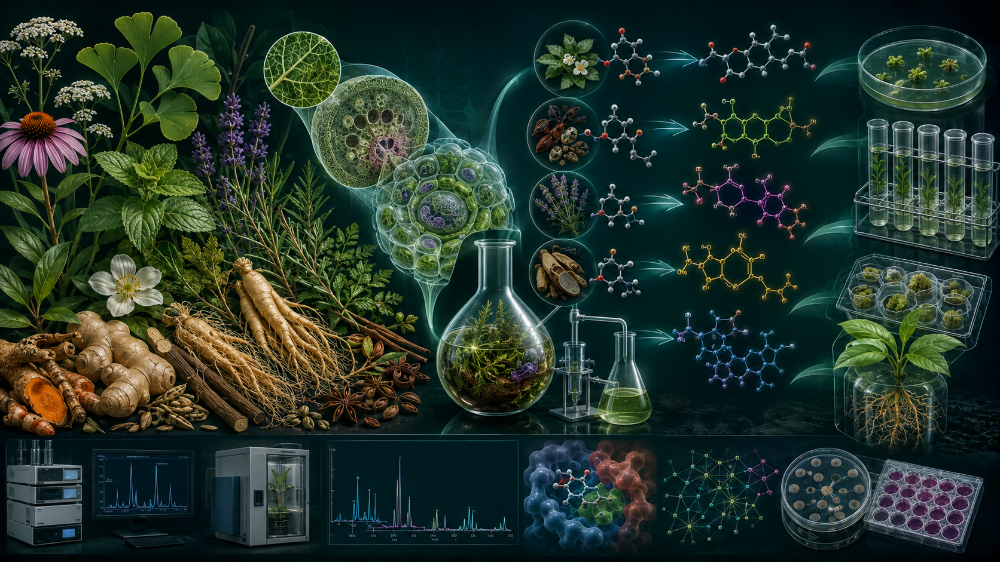
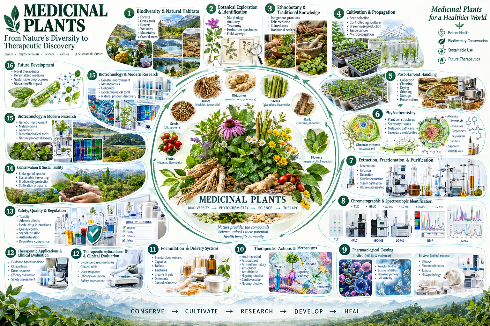
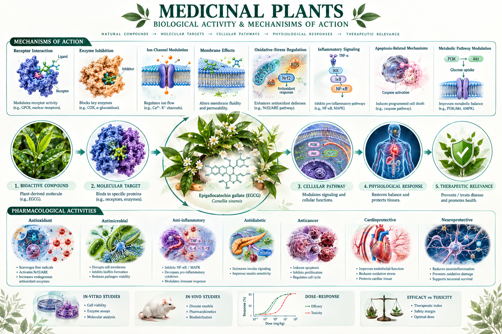

Medicinal Plants
Medicinal plants contain naturally occurring bioactive compounds that may produce therapeutic or beneficial pharmacological effects. This subject explores medicinal plant diversity, specialized metabolites, phytochemistry, extraction, biological activity and plant biotechnology.
Medicinal Plants
Scientific Definition
Medicinal plants are plant species or plant-derived materials that contain biologically active constituents capable of producing therapeutic or other beneficial physiological effects. Their biological activity is associated with chemically diverse primary and specialized metabolites whose abundance and composition can vary among species, tissues, developmental stages and environmental conditions.
Scientific Overview
Medicinal Plants examines plant resources as sources of biologically active natural products. The course integrates plant biology with phytochemistry by considering botanical identification, plant organs and tissues, specialized metabolism, major classes of phytochemicals and their biosynthetic origins. It also introduces extraction and characterization of plant-derived compounds, evaluation of biological activity, and the use of plant tissue culture for controlled propagation, conservation and metabolite production.
Core Areas
Biotechnology Relevance
The subject connects plant science and phytochemistry with natural-product biotechnology, plant tissue culture, conservation, controlled metabolite production and the investigation of biologically active compounds.
Scientific Visuals


Learning Outcomes
- Define medicinal plants in a scientific context and explain their importance as sources of biologically active natural products.
- Identify major classes of plant specialized metabolites and relate them to plant tissues and biological functions.
- Explain the principles of extraction and characterization of plant-derived compounds.
- Describe the role of plant tissue culture in propagation, conservation and metabolite production.